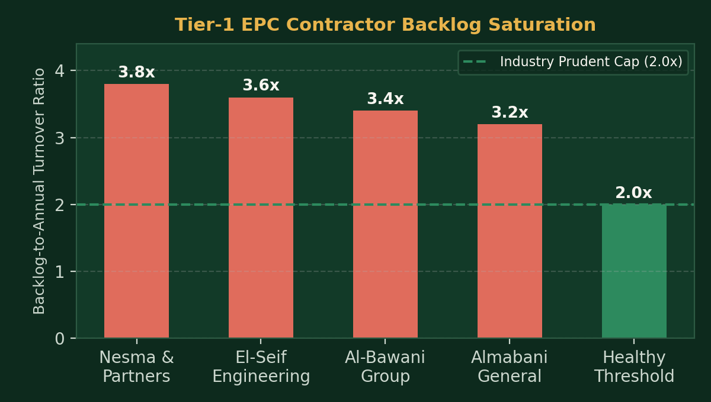
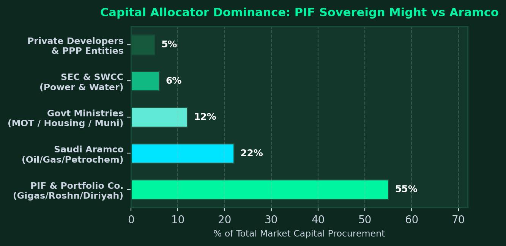

Contractor Landscape & Market Dynamics
Backlog Saturation, Domestic Champions & Joint Venture Architectures
The procurement landscape in Saudi Arabia is characterized by unprecedented market concentration and capacity limits among the top tier of EPC contractors.

1. Domestic Champions & Backlog-to-Turnover Saturation
Unlike mature European or North American markets where contractors maintain backlog-to-revenue ratios around 1.5x to 2.0x, top domestic Saudi contractors carry historic order books:
- Nesma & Partners (3.8x Backlog Ratio): Anchoring mega civil, tunneling, and infrastructure works across NEOM, Diriyah, and Aramco.
- El-Seif Engineering Contracting (3.6x Backlog Ratio): Leading landmark high-rise, mixed-use commercial, and hospital builds across Riyadh and Jeddah.
- Al-Bawani Group (3.4x Backlog Ratio): Delivering critical infrastructure, university campuses, and giga-project packages.
- Almabani General Contractors (3.2x Backlog Ratio): Leading aviation, runways, terminal infrastructure, and metro tunneling.
The Operational Paradox:
Having too much work on the balance sheet is as dangerous as having too little. When order books exceed 3.5x annual revenue, project teams face severe engineering dilution, equipment shortages, and subcontractor quality drift.
2. Capital Allocator Dominance: Sovereign PIF vs Saudi Aramco
Over 75% of all active capital procurement originates from two sovereign client balance sheets:

1. Public Investment Fund (PIF) & Portfolio Entities (55%)
- Governed by international program management offices (PMOs) staffed by global consultancies (Bechtel, Parsons, Jacobs, AECOM).
- Emphasizes design excellence, aggressive delivery schedules, and sustainability metrics.
- Fosters collaborative contracting and early contractor involvement (ECI) models to mitigate market capacity bottlenecks.
2. Saudi Aramco (22%)
- Operates the gold standard in procurement discipline through its strict General Instructions (GIs) and engineering standards.
- Mandates Iktva compliance and rigorous safety protocols.
- Offers highly predictable payment cycles and transparent change-order governance.
3. Government Ministries & Statutory Authorities (23%)
- Ministry of Transport & Logistic Services: Road networks, highway safety, and Landbridge rail tenders.
- National Housing Company (NHC): Master infrastructure packages for large-scale residential suburbs.
- Royal Commission for Riyadh City (RCRC): Metro extensions, urban greening (King Salman Park), and World Cup stadium infrastructure.
3. The Rise of International Joint Ventures (JVs)
To overcome domestic capacity ceilings, sovereign developers require domestic champions to form unincorporated joint ventures (UJVs) with global tier-1 contractors:
| Joint Venture Partners | Lead Focus | Key Mega-Award Example |
|---|---|---|
| Nesma & Partners + Webuild (Italy) | High-speed rail, tunneling, dams | Trojena mountain resort dams & ski village ($4.7B) |
| El-Seif + FCC Construcción (Spain) | Metro lines, major transit hubs | Riyadh Metro lines & Diriyah Square infrastructure |
| Al-Bawani + UCC Holding (Qatar) | Commercial mixed-use, healthcare | Specialized medical cities & university campuses |
| Almabani + Freyssinet (France) | Pre-stressed concrete, airport runways | King Salman International Airport earthworks |
This JV model pairs the international partner's specialized technical engineering and equipment access with the local champion's domestic supply chain, labor visas, and statutory navigation capabilities.